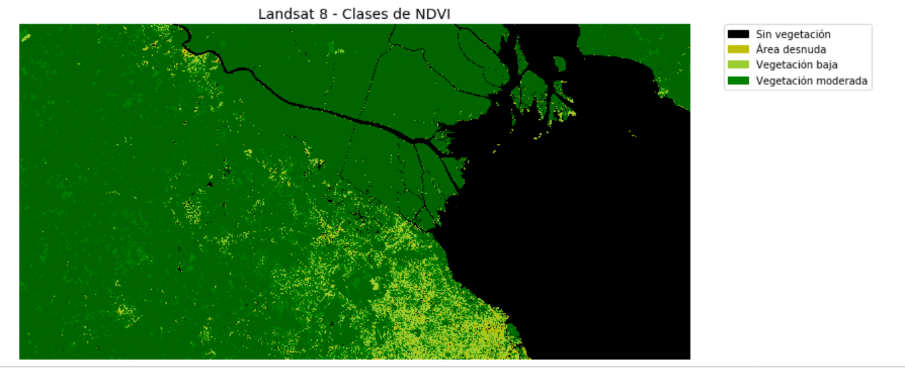

Contenidos | Anterior (5 Objetos, pilas y colas) | Próximo (7 Cierre de la clase)
9.6 Teledetección
En este video introducimos el tema de esta sección.
En este ejercicio vamos a trabajar con una imagen satelital obtenida por sensores a bordo del satélite Landsat8. Es un ejercicio optativo para entregar. Si querés, hacelo y guardalo en el archivo NDVI.py.
Ejercicio 9.14: Optativo de teledetección
Autora: Mariela Rajngewerc
La imagen original fue bajada de la página del earthexplorer. En esa página se pueden bajar imágenes con distinto nivel de pre-procesamiento. Para este ejercicio bajamos una imagen de nivel de procesamiento 2, esto quiere decir que los valores de los pixeles representan la reflectancia en superficie en distintas longitudes de onda. Acá pueden encontrar el manual de estas imagenes donde les detallan la descripción tanto de los nombres de lor archivos como de los preprocesamiento que tienen realizados.
Para este ejercicio hemos realizado un clip de cada una de las bandas originales de la imagen y ya multiplicamos a cada una de las bandas por el factor de escala indicado en el manual (0,0001).
Las longitudes de onda y la resoluciones de cada banda de la imágen se describen a continuación:
| Banda | Longitud de onda (nanómetros) | Resolución espacial (metros) |
|---|---|---|
| Banda 1 - Aerosoles | 430 - 450 | 30 |
| Banda 2 - Azul | 450 - 510 | 30 |
| Banda 3 - Verde | 530 - 590 | 30 |
| Banda 4 - Rojo | 640 - 670 | 30 |
| Banda 5 - Infrarrojo cercano | 850 - 880 | 30 |
| Banda 6 - Infrarrojo medio 1 | 1570 - 1650 | 30 |
| Banda 7 - Infrarrojo medio 2 | 2110 - 2290 | 30 |
Si desean abrir los datos de la imagen original en Python deberán bajar algunas librerías específicas para la manipulación de datos satelitales, por ejemplo: gdal. Acá hay un tutorial de los primeros pasos.
En la carpeta clip encontrarán los datos que vamos a usar en los ejercicios. Cada banda del clip se encuentra en formato .npy
Ejercicios:
Ejercicio 9.15: Ver una banda
a) Usá numpy para levantar cada una de las bandas y plt.imshow(banda) para verla.
¿Se ve correctamente? Podés ajustar el rango de visualización de colores usando los parámetros vmin y vmax.
Sugerencia: Con plt.hist(banda.flatten(),bins = 100) vas a ver un histograma de los valores en la matriz banda. Podés usarlo para guiarte en la búsqueda del rango que tiene sentido usar como vmin y vmax.
b) Probá usando percentiles para fijar el rango. Algo como
vmin = np.percentile(data.flatten(), q)
vmax = np.percentile(data.flatten(), 100-q)
c) Escribí una función crear_img_png(carpeta, banda) que, dada una carpeta y un número de banda, muestre la imagen de dicha banda y la guarde en formato .png. Asegurate de incorporar un colorbar al lado de la imágen.
Tené en cuenta lo que hiciste en los puntos anteriores para que se vea adecuadamente.
Ejercicio 9.16: Histogramas
Escribí ahora otra función, llamada crear_hist_png(carpeta, banda, bins) que, dada una carpeta, un número de banda y una cantidad de bins, muestre el histograma (con la cantidad de bins seleccionados) de los valores de dicha banda y la guarde en formato .png.
Ejercicio 9.17: Máscaras binarias
a) Usá las funciones crear_img_png y crear_hist_png que hiciste en los puntos anteriores para generar las imágenes e histogramas de cada banda.
b) ¿Qué banda o bandas parecieran tener histogramas bimodales, mostrando diferentes tipos de pixels? Elegí una de esas bandas y, observando el histograma, seleccioná un umbral que te permita distinguir los dos tipos de píxels. Por ejemplo, podés crear una matriz del mismo tamaño de la banda donde a cada píxel le corresponda un 1 o un 0, 1 si está por arriba del umbral y 0 si no.
Graficá la imágen binaria así obtenida. ¿A qué corresponden los dos tipos de píxeles que pudiste distinguir tan fácilmente?
Ejercicio 9.18: Clasificación manual
En este ejercicio vamos a trabajar con un índice: el Índice de Vegetación de Diferencia Normalizada, también conocido como NDVI por sus siglas en inglés. Este índice, basado en la intensidad de la radiación de dos bandas del espectro electromagnético que interactúan particularmente con la vegetación, aporta información sobre la cantidad, estado y desarrollo de la misma.
Para calcular el NDVI se utilizan las bandas espectrales Roja e Infrarroja y el cálculo se hace mediante la siguiente fórmula:
(INFRARROJO_CERCANO - ROJO) / (INFRARROJO_CERCANO + ROJO)
a) Calcular el NDVI en una nueva matriz.
b) Categorizá los valores obtenidos en cada píxel de acuerdo a clases que nos sean más útiles y fáciles de interpretar. La tabla a continuación muestra una propuesta de categorías que podés considerar:
| Valor de NDVI | Nombre de la clase | Identificador de Clase | color |
|---|---|---|---|
| < 0 | No vegetada | 0 | black |
| entre 0 y 0.1 | Área desnuda | 1 | y |
| entre 0.1 y 0.25 | Vegetación baja | 2 | yellowgreen |
| entre 0.25 y 0.4 | Vegetación moderada | 3 | g |
| >0.4 | Vegetación densa | 4 | darkgreen |
Creá un np.array que le asigne a cada píxel el número dado por el identificador de categoría correspondiente según la tabla. Llamá clases_ndvi a la matriz así obtenida.
c) Generá un gráfico con matplotlib mostrando las clases obtenidas.
d) Crear un colorMap para lograr asignarle a cada clase el color sugerido en la tabla. Para esto podés usar la función ListedColormap incluída en matplotlib.colors y crear un colorMap (cmap).
e) Ponele una leyenda que indique el nombre de cada clase con el color asignado, para eso te sugerimos usar la función Patch que se encuentra en matplotlib.patches. Para que puedas orientarte, te mostramos a continuación un ejemplo de resultado esperado:

Si llegaste hasta acá, no te olvides de guardar tu trabajo en el archivo NDVI.py y entregarlo. A continuación, un ejercicio que usa herramientas un poco más avanzadas de aprendizaje automático.
Ejercicio 9.19: Clasificación automática
En el ejercicio anterior definimos a mano los umbrales que distinguen las clases. Es posible hacer esto de forma automática. Para eso se usan técnicas de clustering. El siguiente código muestra un ejemplo con un clasificador muy sencillo: kmeans. Este clasificador está ya implementado en la biblioteca sklearn que es una biblioteca dedicada al aprendizaje automático en python (probablemente la más usada para esto).
# filtro datos ruidosos o que puedan traer problemas.
# el NDVI debe estar entre -1 y 1.
ndvi[ndvi > 1] = 1
ndvi[ndvi < -1] = -1
#importo el clasificador y defino una instancia para clasificar con dos etiquetas
from sklearn.cluster import KMeans
kmeans = KMeans(n_clusters = 2)
#le saco la estructura bidimensional a la matriz NDVI y la llamo datos
datos = ndvi.reshape(-1,1) #datos es un vector con un dato de NDVI por pixel.
#entreno o ajusto el el clasificador con los datos (demora!)
kmeans.fit(datos) #ajusta el modelo
#usa el modelo ajustado para poner etiquetas
etiquetas = kmeans.predict(ndvi.reshape(-1,1))
#visualizo los resultados recuperando la estructura bidimensional de la matriz
plt.imshow(etiquetas.reshape(ndvi.shape))
Probá ajustando el número de clusters (n_clusters = 5, por ejemplo) y corriendo nuevamente el modelo. Ponele colores diferentes a las diferentes clases obtenidas.
Si tarda mucho podés trabajar con un pedazo de la imágen. Por ejemplo si hacés ndvi_clip = ndvi[1000:2000,2000:3000] te quedás con un cuadradito que es un octavo de la imagen original y podés usarlo para probar cosas rápido. Si te convencen los resultados podés correr tu algoritmo sobre la imágen completa.
Sugerencia: Código para colorbars
Revisar este código para el cmap:
from matplotlib import colors
# Creo colores
cmap = colors.ListedColormap(['black', 'y',
'yellowgreen', 'green', 'darkgreen'])
# Defino los limites de cada color
limites = [0, 1, 2, 3, 4]
norm = colors.BoundaryNorm(limites, cmap.N)
# Genero el grafico con colores
plt.imshow(clases_ndvi, cmap=cmap, norm=norm)
Y éste para las leyendas:
import matplotlib.patches as mpatches
# Genero leyenda y grafico con leyenda
texts = ['Sin vegetacion', 'Area desnuda', 'Vegetacion baja',
'Vegetacion moderada', 'Vegetacion densa']
patches = [mpatches.Patch(color=cmap(i), label="{:s}".format(texts[i]) ) for i in range(len(texts))]
plt.legend(handles=patches, bbox_to_anchor=(0.2,1.3), loc='center', ncol=1 )
plt.imshow(clases_ndvi, cmap=cmap, norm=norm)
plt.show()
Contenidos | Anterior (5 Objetos, pilas y colas) | Próximo (7 Cierre de la clase)